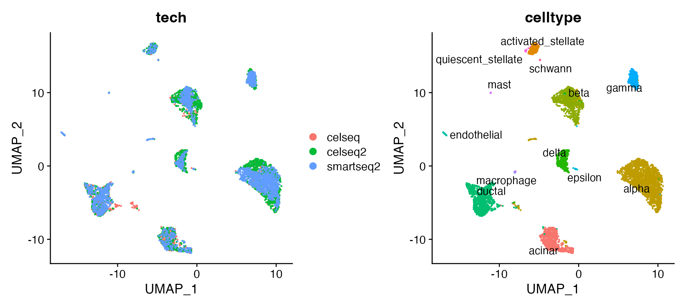
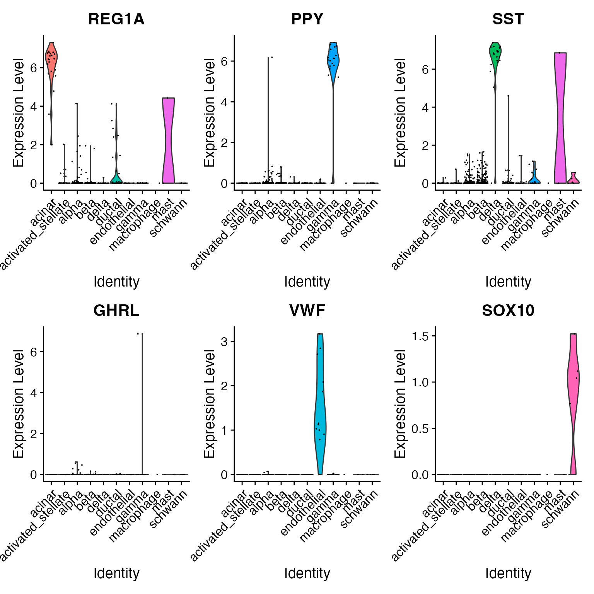
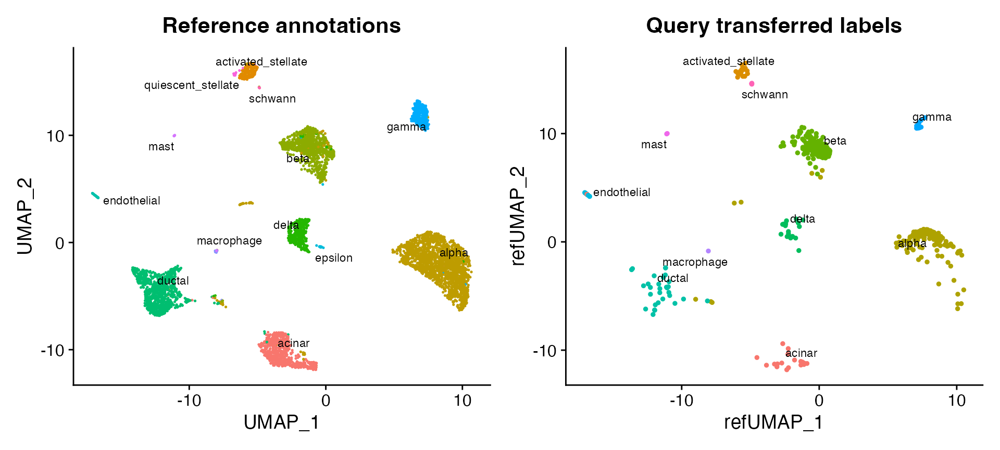

Mapping and annotating query datasets
Compiled: 2023-07-24
seurat__integration_mapping.RmdIntroduction to single-cell reference mapping
In this vignette, we first build an integrated reference and then demonstrate how to leverage this reference to annotate new query datasets. Generating an integrated reference follows the same workflow described in more detail in the integration introduction vignette. Once generated, this reference can be used to analyze additional query datasets through tasks like cell type label transfer and projecting query cells onto reference UMAPs. Notably, this does not require correction of the underlying raw query data and can therefore be an efficient strategy if a high quality reference is available.
Dataset preprocessing
For the purposes of this example, we’ve chosen human pancreatic islet
cell datasets produced across four technologies, CelSeq (GSE81076)
CelSeq2 (GSE85241), Fluidigm C1 (GSE86469), and SMART-Seq2
(E-MTAB-5061). For convenience, we distribute this dataset through our
SeuratData
package. The metadata contains the technology (tech column)
and cell type annotations (celltype column) for each cell
in the four datasets.
InstallData("panc8")To construct a reference, we will identify ‘anchors’ between the individual datasets. First, we split the combined object into a list, with each dataset as an element (this is only necessary because the data was bundled together for easy distribution).
data("panc8")
pancreas.list <- SplitObject(panc8, split.by = "tech")
pancreas.list <- pancreas.list[c("celseq", "celseq2", "fluidigmc1", "smartseq2")]Prior to finding anchors, we perform standard preprocessing
(log-normalization), and identify variable features individually for
each. Note that Seurat implements an improved method for variable
feature selection based on a variance stabilizing transformation
("vst")
for (i in 1:length(pancreas.list)) {
pancreas.list[[i]] <- NormalizeData(pancreas.list[[i]], verbose = FALSE)
pancreas.list[[i]] <- FindVariableFeatures(pancreas.list[[i]], selection.method = "vst", nfeatures = 2000,
verbose = FALSE)
}Integration of 3 pancreatic islet cell datasets
Next, we identify anchors using the
FindIntegrationAnchors() function, which takes a list of
Seurat objects as input. Here, we integrate three of the objects into a
reference (we will use the fourth later in this vignette as a query
dataset to demonstrate mapping).
- We use all default parameters here for identifying anchors, including the ‘dimensionality’ of the dataset (30; feel free to try varying this parameter over a broad range, for example between 10 and 50).
reference.list <- pancreas.list[c("celseq", "celseq2", "smartseq2")]
pancreas.anchors <- FindIntegrationAnchors(object.list = reference.list, dims = 1:30)We then pass these anchors to the IntegrateData()
function, which returns a Seurat object.
- The returned object will contain a new
Assay, which holds an integrated (or ‘batch-corrected’) expression matrix for all cells, enabling them to be jointly analyzed.
pancreas.integrated <- IntegrateData(anchorset = pancreas.anchors, dims = 1:30)After running IntegrateData(), the Seurat
object will contain a new Assay with the integrated
expression matrix. Note that the original (uncorrected values) are still
stored in the object in the “RNA” assay, so you can switch back and
forth.
We can then use this new integrated matrix for downstream analysis and visualization. Here we scale the integrated data, run PCA, and visualize the results with UMAP. The integrated datasets cluster by cell type, instead of by technology.
library(ggplot2)
library(cowplot)
library(patchwork)
# switch to integrated assay. The variable features of this assay are automatically set during
# IntegrateData
DefaultAssay(pancreas.integrated) <- "integrated"
# Run the standard workflow for visualization and clustering
pancreas.integrated <- ScaleData(pancreas.integrated, verbose = FALSE)
pancreas.integrated <- RunPCA(pancreas.integrated, npcs = 30, verbose = FALSE)
pancreas.integrated <- RunUMAP(pancreas.integrated, reduction = "pca", dims = 1:30, verbose = FALSE)
p1 <- DimPlot(pancreas.integrated, reduction = "umap", group.by = "tech")
p2 <- DimPlot(pancreas.integrated, reduction = "umap", group.by = "celltype", label = TRUE, repel = TRUE) +
NoLegend()
p1 + p2
Cell type classification using an integrated reference
Seurat also supports the projection of reference data (or meta data) onto a query object. While many of the methods are conserved (both procedures begin by identifying anchors), there are two important distinctions between data transfer and integration:
- In data transfer, Seurat does not correct or modify the query expression data.
- In data transfer, Seurat has an option (set by default) to project the PCA structure of a reference onto the query, instead of learning a joint structure with CCA. We generally suggest using this option when projecting data between scRNA-seq datasets.
After finding anchors, we use the TransferData()
function to classify the query cells based on reference data (a vector
of reference cell type labels). TransferData() returns a
matrix with predicted IDs and prediction scores, which we can add to the
query metadata.
pancreas.query <- pancreas.list[["fluidigmc1"]]
pancreas.anchors <- FindTransferAnchors(reference = pancreas.integrated, query = pancreas.query,
dims = 1:30, reference.reduction = "pca")
predictions <- TransferData(anchorset = pancreas.anchors, refdata = pancreas.integrated$celltype,
dims = 1:30)
pancreas.query <- AddMetaData(pancreas.query, metadata = predictions)Because we have the original label annotations from our full integrated analysis, we can evaluate how well our predicted cell type annotations match the full reference. In this example, we find that there is a high agreement in cell type classification, with over 96% of cells being labeled correctly.
pancreas.query$prediction.match <- pancreas.query$predicted.id == pancreas.query$celltype
table(pancreas.query$prediction.match)##
## FALSE TRUE
## 21 617To verify this further, we can examine some canonical cell type markers for specific pancreatic islet cell populations. Note that even though some of these cell types are only represented by one or two cells (e.g. epsilon cells), we are still able to classify them correctly.
table(pancreas.query$predicted.id)##
## acinar activated_stellate alpha beta
## 22 17 253 256
## delta ductal endothelial gamma
## 22 30 12 18
## macrophage mast schwann
## 1 2 5
VlnPlot(pancreas.query, c("REG1A", "PPY", "SST", "GHRL", "VWF", "SOX10"), group.by = "predicted.id")
Unimodal UMAP Projection
In Seurat v4, we also enable projection of a query onto the reference
UMAP structure. This can be achieved by computing the reference UMAP
model and then calling MapQuery() instead of
TransferData().
pancreas.integrated <- RunUMAP(pancreas.integrated, dims = 1:30, reduction = "pca", return.model = TRUE)
pancreas.query <- MapQuery(anchorset = pancreas.anchors, reference = pancreas.integrated, query = pancreas.query,
refdata = list(celltype = "celltype"), reference.reduction = "pca", reduction.model = "umap")What is MapQuery doing?
MapQuery() is a wrapper around three functions:
TransferData(), IntegrateEmbeddings(), and
ProjectUMAP(). TransferData() is used to
transfer cell type labels and impute the ADT values;
IntegrateEmbeddings() is used to integrate reference with
query by correcting the query’s projected low-dimensional embeddings;
and finally ProjectUMAP() is used to project the query data
onto the UMAP structure of the reference. The equivalent code for doing
this with the intermediate functions is below:
pancreas.query <- TransferData(anchorset = pancreas.anchors, reference = pancreas.integrated, query = pancreas.query,
refdata = list(celltype = "celltype"))
pancreas.query <- IntegrateEmbeddings(anchorset = pancreas.anchors, reference = pancreas.integrated,
query = pancreas.query, new.reduction.name = "ref.pca")
pancreas.query <- ProjectUMAP(query = pancreas.query, query.reduction = "ref.pca", reference = pancreas.integrated,
reference.reduction = "pca", reduction.model = "umap")We can now visualize the query cells alongside our reference.
p1 <- DimPlot(pancreas.integrated, reduction = "umap", group.by = "celltype", label = TRUE, label.size = 3,
repel = TRUE) + NoLegend() + ggtitle("Reference annotations")
p2 <- DimPlot(pancreas.query, reduction = "ref.umap", group.by = "predicted.celltype", label = TRUE,
label.size = 3, repel = TRUE) + NoLegend() + ggtitle("Query transferred labels")
p1 + p2
Session Info
## R version 4.3.0 (2023-04-21)
## Platform: aarch64-apple-darwin20 (64-bit)
## Running under: macOS Ventura 13.4.1
##
## Matrix products: default
## BLAS: /Library/Frameworks/R.framework/Versions/4.3-arm64/Resources/lib/libRblas.0.dylib
## LAPACK: /Library/Frameworks/R.framework/Versions/4.3-arm64/Resources/lib/libRlapack.dylib; LAPACK version 3.11.0
##
## locale:
## [1] en_US.UTF-8/en_US.UTF-8/en_US.UTF-8/C/en_US.UTF-8/en_US.UTF-8
##
## time zone: America/New_York
## tzcode source: internal
##
## attached base packages:
## [1] stats graphics grDevices utils datasets methods base
##
## other attached packages:
## [1] patchwork_1.1.2 cowplot_1.1.1 ggplot2_3.4.2
## [4] panc8.SeuratData_3.0.2 SeuratData_0.2.2 SeuratObject_4.1.3
## [7] Seurat_4.3.0.1
##
## loaded via a namespace (and not attached):
## [1] RColorBrewer_1.1-3 rstudioapi_0.14 jsonlite_1.8.4
## [4] magrittr_2.0.3 ggbeeswarm_0.7.2 spatstat.utils_3.0-3
## [7] farver_2.1.1 rmarkdown_2.21 fs_1.6.2
## [10] ragg_1.2.5 vctrs_0.6.2 ROCR_1.0-11
## [13] memoise_2.0.1 spatstat.explore_3.2-1 htmltools_0.5.5
## [16] sass_0.4.6 sctransform_0.3.5 parallelly_1.36.0
## [19] KernSmooth_2.23-21 bslib_0.5.0 htmlwidgets_1.6.2
## [22] desc_1.4.2 ica_1.0-3 plyr_1.8.8
## [25] plotly_4.10.1 zoo_1.8-12 cachem_1.0.8
## [28] igraph_1.4.3 mime_0.12 lifecycle_1.0.3
## [31] pkgconfig_2.0.3 Matrix_1.5-4.1 R6_2.5.1
## [34] fastmap_1.1.1 fitdistrplus_1.1-11 future_1.32.0
## [37] shiny_1.7.4 digest_0.6.31 colorspace_2.1-0
## [40] rprojroot_2.0.3 tensor_1.5 irlba_2.3.5.1
## [43] textshaping_0.3.6 labeling_0.4.2 progressr_0.13.0
## [46] fansi_1.0.4 spatstat.sparse_3.0-2 httr_1.4.6
## [49] polyclip_1.10-4 abind_1.4-5 compiler_4.3.0
## [52] withr_2.5.0 highr_0.10 MASS_7.3-60
## [55] rappdirs_0.3.3 tools_4.3.0 vipor_0.4.5
## [58] lmtest_0.9-40 beeswarm_0.4.0 httpuv_1.6.11
## [61] future.apply_1.11.0 goftest_1.2-3 glue_1.6.2
## [64] nlme_3.1-162 promises_1.2.0.1 grid_4.3.0
## [67] Rtsne_0.16 cluster_2.1.4 reshape2_1.4.4
## [70] generics_0.1.3 gtable_0.3.3 spatstat.data_3.0-1
## [73] tidyr_1.3.0 data.table_1.14.8 sp_2.0-0
## [76] utf8_1.2.3 spatstat.geom_3.2-2 RcppAnnoy_0.0.20
## [79] ggrepel_0.9.3 RANN_2.6.1 pillar_1.9.0
## [82] stringr_1.5.0 later_1.3.1 splines_4.3.0
## [85] dplyr_1.1.2 lattice_0.21-8 survival_3.5-5
## [88] deldir_1.0-9 tidyselect_1.2.0 miniUI_0.1.1.1
## [91] pbapply_1.7-2 knitr_1.43 gridExtra_2.3
## [94] scattermore_1.1 xfun_0.39 matrixStats_0.63.0
## [97] stringi_1.7.12 lazyeval_0.2.2 yaml_2.3.7
## [100] evaluate_0.21 codetools_0.2-19 tibble_3.2.1
## [103] cli_3.6.1 uwot_0.1.14 xtable_1.8-4
## [106] reticulate_1.28 systemfonts_1.0.4 munsell_0.5.0
## [109] jquerylib_0.1.4 Rcpp_1.0.10 globals_0.16.2
## [112] spatstat.random_3.1-5 png_0.1-8 ggrastr_1.0.1
## [115] parallel_4.3.0 ellipsis_0.3.2 pkgdown_2.0.7
## [118] listenv_0.9.0 viridisLite_0.4.2 scales_1.2.1
## [121] ggridges_0.5.4 leiden_0.4.3 purrr_1.0.1
## [124] crayon_1.5.2 rlang_1.1.1 formatR_1.14